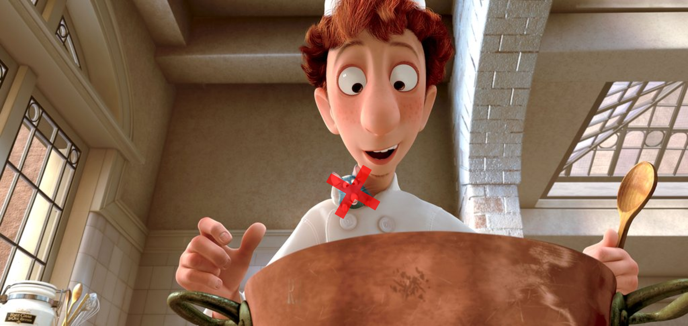

How to cook everything...badly

My father always said a cook is only as good as their ingredients. After years of enduring his meals, I’ve come to understand what makes a dish truly exceptional. The masterpieces I create cater to an extremely refined palate if they don’t suit yours, it’s best you leave them to someone who truly appreciates the finer things
- Cheerio Dogs

Ingredients
- 2 Gourmet Sausages
- 1 slice of American Cheese
- Cheerios
- Fat Free Milk
Instructions
- Microwave 2 sausages for 20 seconds
- Fill a bowl with cheerios and milk
- Gentley place the two sausages ontop of the cheerios
- Add the slice of american cheese
- Sausage spaghetti

Ingredients
- 6 pack of sausages
- Pack of spaghetti
Instructions
- Slice each sausage into 3 pieces
- Stick spaghetti sticks into sausage
- Boil spaghetti sausage on stove for 6 mins on high heat